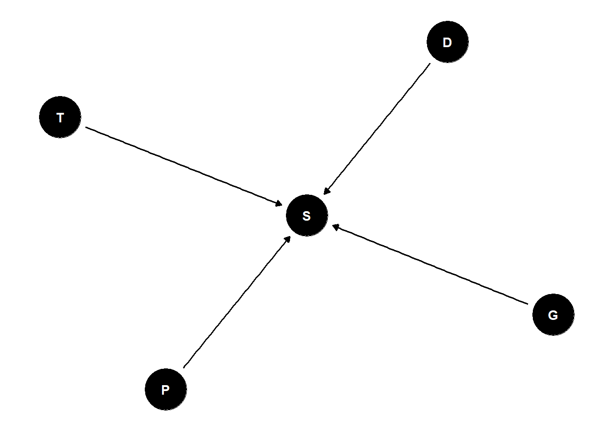
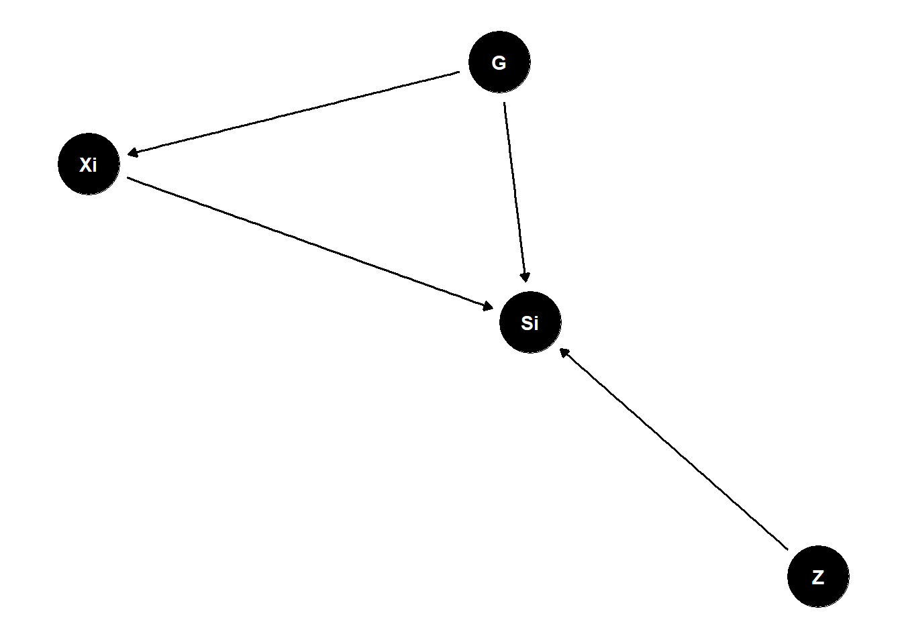

Lecture 12 - Multilevel Models
Rose / Thorn
Rose: helpful but confusing (because so far from what we are taught) way to discuss random effects
Thorn: how tf does this translate to “normal” R packages
Repeat Observations
for any given estimand, there are multiple estimators we can use (but some are better than others)
can include categorical responses such as individuals as seen before
- but the model is not learning
Multilevel Models
- models within models
- model observed groups/individuals
- model of population of groups/individuals
the population model creates a kind of memory
multilevel models with memory learn faster, better AND models with memory resist overfitting
multilevel models use every observation to inform predictions about other cafes and the population of cafes
Regularization
multilevel models adaptively regularize
complete pooling: treat all clusters as identical -> underfitting
no pooling: treat all clusters as unrelated -> overfitting
partial pooling: adaptive compromise that achieves regularization
Reedfrogs
treatments: density, size, predation
outcome: survival
48 groups (“tanks”) of tadpoles
\(S_i \sim Binomial(D_i, p_i)\)
\(logit(p_i) = \alpha_{T[i]}\)
\(\alpha_j \sim Normal(\overline{\alpha}, \sigma)\)
\(\overline{\alpha} \sim Normal(0, 1.5)\)
parameters are just unobserved variables
- data is an observed parameter
if we want to learn about differences in between groups, we can set the prior for the mean tank as we normally would and then leave the prior for the variation of the groups as an unobserved parameter to be learned
find optimal value of sigma through cross-validation
- although we are using the model to choose a prior, we are not basing it off of model fit of the sample, we are evaluating it on cross-validation (out-of-sample). So we we are just assessing whether the model is overfit - not seeing how well it fits the data/causal relationships
Automatic Regularization
can use automatic regularization instead of cross-validation to remove the need to run so many models
\(S_i \sim Binomial(D_i, p_i)\)
\(logit(p_i) = \alpha_{T[i]}\)
\(\alpha_j \sim Normal(\overline{\alpha}, \sigma)\)
\(\overline{\alpha} \sim Normal(0, 1.5)\)
\(\sigma \sim Exponential(1)\)
library(rethinking)
data(reedfrogs)
d <- reedfrogs
d$tank <- 1:nrow(d)
dat <- list(
S = d$surv,
D = d$density,
T = d$tank )
mST <- ulam(
alist(
S ~ dbinom( D , p ) ,
logit(p) <- a[T] ,
a[T] ~ dnorm( a_bar , sigma ) ,
a_bar ~ dnorm( 0 , 1.5 ) ,
sigma ~ dexp( 1 )
), data=dat , chains=4 , log_lik=TRUE )
mSTnomem <- ulam(
alist(
S ~ dbinom( D , p ) ,
logit(p) <- a[T] ,
a[T] ~ dnorm( a_bar , 1 ) ,
a_bar ~ dnorm( 0 , 1.5 )
), data=dat , chains=4 , log_lik=TRUE )
compare( mST , mSTnomem , func=WAIC )multilevel models regularize “for free” - model mST is a multilevel model and having sigma as a prior means that it is regularized around the relevant values
mSTnomem is not a multilevel model (sigma is not a prior - it is a fixed value)
when you are working with multilevel models, when you add treatment variables, the variation among means is going to shrink because you are accounting for the variation with the different treatments
stratify mean by predators:
\(S_i \sim Binomial(D_i, p_i)\)
\(logit(p_i) = \alpha_{T[i]} + \beta_PP_i\)
\(\beta_P \sim Normal(0, 0.5)\)
\(\alpha_j \sim Normal(\overline{\alpha}, \sigma)\)
\(\overline{\alpha_j} \sim Normal(0, 1.5)\)
\(\sigma \sim Exponential(1)\)
# pred model
dat$P <- ifelse(d$pred=="pred",1,0)
mSTP <- ulam(
alist(
S ~ dbinom( D , p ) ,
logit(p) <- a[T] + bP*P ,
bP ~ dnorm( 0 , 0.5 ),
a[T] ~ dnorm( a_bar , sigma ) ,
a_bar ~ dnorm( 0 , 1.5 ) ,
sigma ~ dexp( 1 )
), data=dat , chains=4 , log_lik=TRUE )
post <- extract.samples(mSTP)
dens( post$bP , lwd=4 , col=2 , xlab="bP (effect of predators)" )extremely similar predictions between model with predators and model without
- because alphas can learn the behaviours of each tank without an explanation (ie predators)
BUT the variation between tanks is very different between models
- predator model has much lower variation in sigma
Multilevel Tadpoles
model of unobserved population helps learn about observed units
use data efficiently, reduce overfitting
varying effects: unit-specific partially pooled estimates (also called random effects depending on discipline)
Varying Effects Superstitions
units must be sampled at random (false - unrelated) - justification for partial pooling is that you learn faster
number of units must be large (false - unrelated)
assumes Gaussian variation (false) - misunderstanding of probability theory. Distributions in statistical models are not claims of frequency distributions of the variables in the real world, they are just priors. Posterior distribution does not have to be Gaussian. A Gaussian prior does not impose a Gaussian posterior distribution.
prior is just a prior
but you can use non-random distributions in multilevel models
Practical Difficulties
how to use more than one cluster at the same time?
how to sample efficiently?
what about slopes? confounds?
Bonus: Random Confounds
when unobserved group features influence individually-varying causes
- group level variables have direct and indirect influences
very confusing literature

G (tank traits) have direct influences on Si (survival)
Z (group trait) have direct influences on Si (survival)
Xi (individual trait) have direct influences on Si
PROBLEM: G (tank traits) also indirectly influence Si through Xi
multilevel models that account for these confounds = Mundlak Machines
set.seed(8672)
N_groups <- 30
N_id <- 200
a0 <- (-2)
bZY <- (-0.5)
g <- sample(1:N_groups,size=N_id,replace=TRUE) # sample into groups
Ug <- rnorm(N_groups,1.5) # group confounds
X <- rnorm(N_id, Ug[g] ) # individual varying trait
Z <- rnorm(N_groups) # group varying trait (observed)
Y <- rbern(N_id, p=inv_logit( a0 + X + Ug[g] + bZY*Z[g] ) )
table(g)- can use a fixed effects model (estimate a different average rate for each group, without pooling) which soaks up the confounding - but its inefficient and it cannot identify any group-level effects
# fixed effects
# X deconfounded, but Z unidentified now!
precis(glm(Y~X+Z[g]+as.factor(g),family=binomial),pars=c("X","Z"),2)
dat <- list(Y=Y,X=X,g=g,Ng=N_groups,Z=Z)
# fixed effects
mf <- ulam(
alist(
Y ~ bernoulli(p),
logit(p) <- a[g] + bxy*X + bzy*Z[g],
a[g] ~ dnorm(0,10),
c(bxy,bzy) ~ dnorm(0,1)
) , data=dat , chains=4 , cores=4 )
# random effects
mr <- ulam(
alist(
Y ~ bernoulli(p),
logit(p) <- a[g] + bxy*X + bzy*Z[g],
transpars> vector[Ng]:a <<- abar + z*tau,
z[g] ~ dnorm(0,1),
c(bxy,bzy) ~ dnorm(0,1),
abar ~ dnorm(0,1),
tau ~ dexp(1)
) , data=dat , chains=4 , cores=4 , sample=TRUE )should expect your model to have posterior high density regions over the true value
fixed effects model cannot estimate the group level effects
multilevel model pulls intercepts towards each other and thus compromises on identifying the confound so that it can get better estimates for each group
- better estimates for G, worse estimate for X but you can include Z
Mundlak Machine
calculate group average X which is a descendant of the confound (G) SO if we condition on \(\overline{X}_G\) and treat it like a group level variable, it will partly deconfound our model
estimate a different average rate for each group via partial pooling via including group average X
better X but improper respect for uncertainty in X-bar (ignoring quality of Xbar across groups)
# The Mundlak Machine
xbar <- sapply( 1:N_groups , function(j) mean(X[g==j]) )
dat$Xbar <- xbar
mrx <- ulam(
alist(
Y ~ bernoulli(p),
logit(p) <- a[g] + bxy*X + bzy*Z[g] + buy*Xbar[g],
transpars> vector[Ng]:a <<- abar + z*tau,
z[g] ~ dnorm(0,1),
c(bxy,buy,bzy) ~ dnorm(0,1),
abar ~ dnorm(0,1),
tau ~ dexp(1)
) , data=dat , chains=4 , cores=4 , sample=TRUE )can fix the problem of not respecting the uncertainty in X-bar
treat G as unknown and use Xi to estimate
respects uncertainty in G
run two simultaneous regressions
# The Latent Mundlak Machine
mru <- ulam(
alist(
# Y model
Y ~ bernoulli(p),
logit(p) <- a[g] + bxy*X + bzy*Z[g] + buy*u[g],
transpars> vector[Ng]:a <<- abar + z*tau,
# X model
X ~ normal(mu,sigma),
mu <- aX + bux*u[g],
vector[Ng]:u ~ normal(0,1),
# priors
z[g] ~ dnorm(0,1),
c(aX,bxy,buy,bzy) ~ dnorm(0,1),
bux ~ dexp(1),
abar ~ dnorm(0,1),
tau ~ dexp(1),
sigma ~ dexp(1)
) , data=dat , chains=4 , cores=4 , sample=TRUE )can use fixed effects if you are not interested in group-level predictors or prediction
can include average X but it is better to use the latent model
confounds vary a lot - there is no one answer